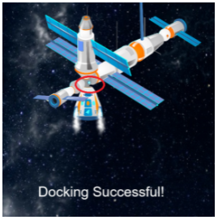

Hello!
This webpage will tell you the instructions of the games given in Top Games', CW Games' and Project Games' webpages. (If you want to know what a webpage is click on this link).
List of Games' Instructions:
Top Games' Webpage's Instructions: ( Top Games' link)
First things first: You have to play all these games in a PC; though the games of the code.org work in a phone, others don't and so it's better to play it in a PC.
- Bombarding Game:
- Instructions are given in Game's link. So go and check it out now!!
- Covid Game:
- Instructions are given in Game's link. So go and check it out now!!
- Spiderman Runner Game:
- Move the Spiderman with left and right arrows.
- Collect the coins to get scores and stay away from the Obstacles.
- You have 5 lives and you can get a score of infinte - if you can!
- Press the restart button once you lose.
- After all your lives are exhausted you have to restart the Webpage (CTRL + R).
- Trex Game:
- You have to press the "Space" button to make the Trex jump.
- You have to jump over the obstacles and try to get as much score you can.
- You have an infinite number of lives.
- Once you die, all you have to do is to press the restart button and you will be able to play again.
- The speed of the Trex will continue to accelerate with an increase in your score so better be careful!
- Mario Game:
- You have to press the "Space" button to make Mario jump.
- You have to jump over the obstacles and try to get as much score you can.
- You have an infinite number of lives.
- Once you die, all you have to do is to press the restart button and you will be able to play again.
- The speed of Mario will continue to accelerate with an increase in your score so better be careful!
- Air Hockey Battle:
- In this game, you have to play against AI( If you don't know about AI click on this link) in this game. (The Aritficial Intelligence {AI} is the computer, in this case).
- You have to press the "Space" button to start the Game.
- You have to move your paddle with "left" and "right arrows" and hit the ball such that it moves to the other side of the court.
- Once the computer hits the ball, you have to do the 3rd step again, and the cycle continues:)
- You can also move up and down with the "up" and "down arrows" (ofcourse).
- If you get a score of 5 you'll win - if you can though!
- If however, the computer gets a score of 5, you'll lose, and you have to press 'R'/'r' on your keyboard to restart the game - GOOD LUCK;)
- HARRY POTTER v/s VOLDEMORT:
- You have to press "Space" to start the Game.
- You have to move Harry Potter with "left" and "right arrows" and stay away from the spells of Voldemort (the lightning bolts) as much as you can.
- At the same time, Harry will also throw a spell at Voldemort and since he can't move (by the rule of this game, LOL) if the spell touches him you'll get a point.
- Like this, you'll be able to manage a victory against Voldemort (your childhood dream if you are a Potterhead) if you get a score of 5.
- If however, Voldemort gets a score of 5 by killing you 5 times, then you'll lose.
- No matter whether you lose or win, you'll still be able to restart the Game by pressing 'R'/'r' on your keyboard.
- Angry Birds:
- In this game, you have to drag the Angry Bird to the opposite direction by using the slingshot attached to the catapault, and launch it towards the pigs to attack them.
- If you are playing in a Laptop, then you have to double click on the angry bird and on the second attempt, you have to launch the bird towards the Bad Piggies.
- If however, you weren't able to kill the Bad Piggies in your first attempt, you can get another attempt by clicking the "Space" button on your keyboard.
- In fact, you can get as many tries you want by clicking on the "Space" button but, try to do it in your first/second attempt!
- Each pig, when died, will give you 10 points so, if you get 20 points (by killing the 2 pigs) in 1/2 attempts then, well done!
- Balloon Buster:
- Press the "Space" button to launch the arrows and burst the balloons when you see them.
- Different balloons will give you different scores when burst.
- You can get a score of infinite - again if you can
- Sofia in Mazeland:
- You have to move Sofia with the help of "left, right, up" and "down arrows" and make her way out of the maze to the Cup.
- If you touch any of the maze doors, you are dead and have to start from the very beginning again!
- This however, doesn't happen if you touch the edges of the Game's canvas.
- You have infinite number of lives and so can try again and again to reach the cup, if you do touch any of the obstacles.
- If you are able to make Sofia's way to the cup, then YOU WIN - Congrats!
- World's Hardest Game:
- This Game is really simple to understand; all you have to do is to make your way out to the other end of the box.
- However, you have to stay away from the boxes which are gonna move at a good speeeeeed!
- If you succeed in going to the other end, then you Win and will be back where you started.
- The little "Deaths" counter on the top counts the number of deaths you had to face while trying to make out to the other end.
And that's all for the Top Games. Next up are the CW Games!
CW Games' Webpage's Instructions: ( CW Games' link)
- Ping Pong:
- Here again you have to play against AI in this game. (The Aritficial Intelligence {AI} is the computer, in this case).
- You have to press the "Space" button to start the Game.
- You have to move your paddle with "up" and "down arrows" and hit the ball such that it moves to the other side of the court.
- Once the computer hits the ball, you have to do the 3rd step again, and the cycle continues:)
- If you get a score of 5 you'll win - if you can though!
- If however, the computer gets a score of 5, you'll lose, and you have to press 'R'/'r' on your keyboard to restart the Game.
- World's Hardest Game:
- I have already written the instructions for this game in the "Top Games' Webpage's Instructions' " section.
- The number (for your convenience) is XI. - which is the last on that list.
- So go check it out!
- Trex Game:
- Again, in this case also, I have written the instructions of the game in the "Top Games' Webpage's Instructions' " section.
- The number (for your convenience) is IV.
- Check it out NOW!! :)
- Train Game:
- In this game you have to press the "right arrow" on your keyboard continuously to move the Train.
- But you people must have noticed that when the Train touches the rocks, it crashes (which is obvious).
- So to avoid that, you have to press the "right arrow" conitnuously from an early state so that the Train literally jumps over the rocks and you are able to achieve the goal of this Game.
- So try doing that - if you can!
- Angry Birds:
- Again, I have written the instructions of this Game also, in the "Top Games' Webpage's Instructions' " section.
- The number is VIII.
- Good Luck playing the Game.
- Mario Game:
- So, it turns out that I have written the instructions for this Game (again) in the "Top Games' Webpage's Instructions' " section.
- The number is V - for you convenience.
- Engjoy! :)
- Bouncy Ball:
- Well, there is no instructions of this Game as well, simply because there is nothing to do in this Game.
- This Game was designed just to give the gamers a bit of relaxation until they watch the two boxes to stop bouncing (cause they will).
- So that when they close the game, they would be refilled with energy!
- Rectangles Game:
- So I must admit that this Game is also boring, but serves the same purpose - that of its predecessor.
- All you need to do is to find out which green box turns red when you touch the box with the green box that moves with your cursor.
- Don't panic if you don't understand my instruction. Just play the Game, you'll come to know everything:)
- Once you have played around with the boxes, you are good to go to the next section.
And that's all for the CW Games. Next up are the Project Games!
Project Games' Webpage's Instructions: ( Project Games' link)
- Buildings Game:
- Well, actually there is nothing to do in this Game.
- I had coded this Game by doing some Maths (which was the real motive of the Project)
- But still, I have given this project here just to show you guys my first project.
- Squariads Game:
- The purpose of this Game was again to give gamers a bit of relaxation as they watch the white box colide with the grey box and vice versa, and the grey boxes collide with each other.
- Your goal in this Game is to wait until all the boxes have moved from there original position.
- Well, that itself takes a lot of patience and so we can say that this Game also does a test of patience for you as you sit back and relax.
- And after playing this Game, you'll be refilled with energy - And that's the very purpose of this Game.
- Sofia in MazeLand:
- I have already given the instructions for this Game in the "Top Games' Webpage's Instructions' " section.
- For your convenience, the number is X.
- Diamond Theft:
- You have to move the Thief with "left, right, up" and "down arrows" and try to get to the diamond at the top right corner.
- If you manage to break through the security and reach the dimaond you'll be able to steal it and win the Game.
- Otherwise, you'll be caught by the Police, and most likely end up in jail.
- Vegetable Garden:
- Air Hockey Battle:
- Again, I have written the instructions for this Game in the ""Top Games' Webpage's Instructions' " section.
-
- To make it easier for you find it, I am giving you the number; it's VI.
- Now, you can check it out from there.
- Harry Potter v/s Voldemort:
- I have written the instructions for this Game as well, in the ""Top Games' Webpage's Instructions' " section.
-
- To make it easier for you find it, I am giving you the number; it's VII.
- Go and check it out Noww!!:)
- Balloon Buster:
- So, we have a hat-trick of this now.
- This Game's instructions are again written by me earlier in the "Top Games' Webpage's Instructions' " section.
- So make sure to check it out!
- Fruit Ninja:
- In this case, most of the instructions are given in the Game's link.
- The only point missing out is that the speed of both the fruits and the moster increases with an increase in the score.
- So better be careful! LOL!
- Monkey Go Happy:
- Here, you have to press the "Space" button on your keyboard and try to eat the bananas.
- You also have to jump to stay away from the obstacles.
- The score system here is a bit, well, bad...(as I had designed this Game at a very early state).
- But the objective of the Game is still the same, try to survive as long as possible.
- If you collide with the obstacles, you have to restart the browser (CTRL + R), and the Game starts again:)
- Colourful Trex Game for Mobile:
- This is the only one game which can't be played on PC and needs to be played on a mobile phone. But how?
- So if you really want to play this, you have to first create an account in Thunkable (if you already don't have one).
- Follow this link to create an account in Thunkable.
- After you have succeessfully created an account with thunkable, close that webpage and countinue with the next step.
- Open the Colourful Trex Game via its link (which I have given in my Project Games Webpage).
- Then click on "Make a Copy Button". Then close that Webpage also and click on this link.
- There, you'll be able to see "Colouful Trex Game". Now you have to go to your phone's app/play store and download the "Thunkable Live" application.
- After the app has been installed, you have to open the app and sign in with the same account that you had created and logged in to thunkable in your PC.
- There, you have to click on "Colourful Trex Game". But, in most cases the Game wouldn't open and if it has opened then it would lag very much.
- So, for that, you have to locate a "Sign Out" option and you have to Sign back in by following the same procedure you earlier did.
- And then if you click on the link, you'll be able to play the Game. If you are still not able to play then you have to follow the previous step again (do the same step until the Game opens up).
- Now, when you have succeessfully opened the Game, you'll want to play it right?
- So, to make the Trex jump you have to either tap on the screen or slide it upwards.
- And, if you have read point number IV. from my "Top Games' Webpage's Instructions" you should know the rest of the rules.
- If you haven't, you can go check it out now. Engjoy:)
- Spiderman Runner Game:
- I have already written the instructions about this Game in "Top Games' Webpage's Instructions".
- You can go to Point No. III there to see the instructions.
- This is a really good Game, so check it out :)
- GCSO Game:
- Well, in this Game as well, there is not much to do.
- Just what you need to observe is that what the color comes out after the crash test (you should have been able to understand this by seeing the image of the Game).
- If the color comes green then car is eligible; yellow means that the car needs improvement; and red means that the car does not meet the minimum requirements.
- If you haven't though, not much to worry about; in any case you know it now.
- Bullets and Walls:
- Here also, the Game is almost similar to its predecessor.
- Just here, the bullet will meet the wall and green color means that the bullet is eligible; yellow means that the bullet needs improvement; and red means that bullet is not good.
- That's it:)
- Supply Mission:
- Here you have to press the "down arrow" and the supply will fall on the box.
- That's the mission you know, you have to help those in need by giving them the supply of food!
- Crumpled Balls:
- You have to drag the paper in the opposite direction and carefully launch it such that it falls in the dustbin.
- If you are playing in a Laptop, then you have to double click and on the second click you would have to drag it in the opposite direction and throw it towards the dustbin.
- If however, you miss the dustbin in the first chance; then you have to press the refresh the page (CTRL + R) to get multiple chances.
- The reason why I haven't added a "Space" button to get another chance is to give the people who lose in their first tries some punisment...
- Clean Environment is the goal of this Game!
- Birthday Cake:
- This Game not only has the Red Velvet Cake but also something else.
- If you click on this link, then you'll also be able to see the ingredients and the recipe of this cake.
- Happy Baking!
- Newton's Cradle:
- Here, you have to press the "up arrow" key and view the superb discovery of Issac Newton.
- You have to continuously press the key to see that the last ball will also move with the same force.
- f you want detailed information on Newton's cradle, then click here.
- Tower Siege:
- Here, you have to drag the hexagon backwards and launch it towards the blocks and try to breach the towers.
- Again, if you're playing it in a Laptop, then you have to double click on the hexagon and on the second click you have to launch it towards the towers.
- After launching once, you have to press the "Space" button on the keyboard to get another chance to launch the hexagon.
- If you manage to break both the towers, then you win but, you have to do it in the most minimum number of chances.
- Best of Luck! ;)
- Plinko Game:
- Most of the instructions are given except that if a ball enters one bar, it may not give you the point that you deserve cause it's literally landing on the previous ball and not touching the bottom of the bar.
- So you have to be very cautious while launching the Plinkos!
- If you lose, then you have to Restart the Webpage (CTRL + R) and try your best this time:)
- If however, you manage to WIN, that's trully impressive and don't forget to give yourself a pat on the back.
- Kill the Monster:
- You have to drag the Superhero in this case and break through the blocks and kill the monster by throwing him off the surface.
- And that's it; if you wanna play again then you have to Refresh the Webpage (CTRL + R).
- Docking & Undocking Mission
- Here, you have to touch the spacecraft to this particular place by moving it with "up, right" and "down arrows".

- And only then, you'll be able to complete the mission of refueling the iss with the help of the spacecraft (which is the mission).
- If you aren't able to get it the first time then refresh the page and try again.
- However, if you don't know about Docking and Undocking Missions, you can click on this link.
- Bombarding Game
-
So, as I have mentioned above, I have written the instructions for this Game in the Game's link itself.
- And this is one of the best Games ever made by me so, please check it out - I bet you'll like it.
XXXXXXXXXXXXXXXXXXXXXXX
If you want to know about me click on my picture :)

About Me